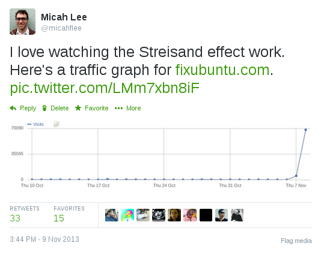

Ubuntu is finally taking privacy seriously
Update: A couple people have pointed out that the privacy changes won’t actually take affect in 14.04, which means that fixubuntu.com will still be necessary until at least 14.10, which will be released in October. Oops.
In October 2012, Canonical made a horrible mistake. They included a “feature” in Ubuntu 12.10 that has been widely considered adware and spyware. I blogged about the new Ubuntu’s Amazon ads and data leaks for EFF at the time, with the main ask being that Dash’s online search should be an opt-in feature and not enabled by default.
Ubuntu’s disregard for user privacy become the impetus that caused me to switch to Debian (though nowadays I’m running Qubes). And in order to make it easier to fix Ubuntu’s privacy problems on new computers I helped people set up, I started the website Fix Ubuntu.
Canonical, the company that makes Ubuntu, sent me a bogus takedown notice about it—later apologizing for it. While it made the privacy issue blow up in the media again, Canonical still refused to fix their bad privacy choices.

So after all of this, I’m thrilled to see that Ubuntu 14.04 LTS, which is due for release later this month, won’t include online searches in Dash by default! For the first time in a year and a half of releases, a default installation of Ubuntu won’t be phoning home with everything you type into Dash, or annoying you with unsolicited ads.
Thank you, Canonical, for finally taking privacy seriously.
(While I’m at it: Thank you, Edward Snowden, for making everyone finally start to take privacy seriously.)


Legacy comments, imported from previous version of this blog:
jeff
July 27, 2015 07:05 PM
are you having fun i hate computers cant spell very well but have broken foot nothing else to do
Lucio
April 3, 2014 11:14 AM
I think that you get the wrong message from the OMG Ubuntu article. The source does explitely mention that it won't take effects on Ubuntu 14.04. See: http://i.imgur.com/G0y3edb.png
micah
April 3, 2014 12:26 PM
Ack, you're totally right.
ZyKlone
September 19, 2014 09:04 AM
Linux should have been considering and standing behind privacy all along! When I first came to Linux----sorry,Ubuntu------it wa because I had realized that Microsoft had made a huge one-way-in, no-way-out (meaning, "write" but no "read" or "modify" privelages) filing cabinet in which the world dumped all of it's information (secrets) for Mr. Gates' disposal. So, I kind of hoped that Ubuntu would respect privacy and protect it...................but, niave I must have been, for NOTHING in today's society appear to be free! There is always a heavy price to pay. nd today we are paying it with access to our computers' microphones and cameras WITHOUT THE CONSUMER EVEN BEING MADE AWARE THAT REMOTE RECORDINGS ARE POSSIBLE AND THAT PRIVATE FAMILY AFFAIRS ARE SECRETLY AVAILABLE TO WHO KNOWS WHAT PRYING EYES!!!! tHIS IS CREEPY AND DANGEROUS............AND, TO TELL YOU THE TRUTH SICKENING------that anyone with enough computer saavy can surveil your liing room or bedroom.
So, yes, it is about time that someone took privacy seriously! I mean, how would those same secretly_spying tech-heads like it if someone peeped inside their living room???????????????
Patrik
September 14, 2015 12:29 PM
14.04/10 and searches still haven't been disabled by default. What do you make of that? Should we trust them?